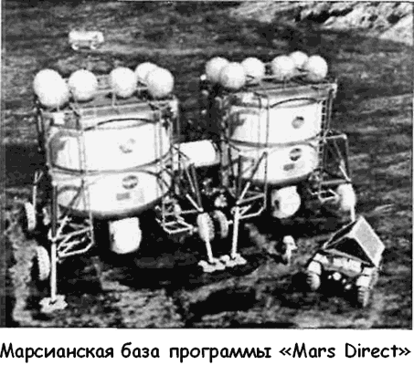

Программа «Mars Direct»
Помимо официальной программы освоения Марса, предложенной НАСА, в США широко обсуждаются проекты, предлагаемые инженером-конструктором Робертом Зубриным, президентом международного «Марсианского общества» («Mars Society»).
Один из первых альтернативных проектов пилотируемой экспедиции на Марс Зубрин разработал в 1996 году.
Проект под названием «Атена» («Athena») предусматривал выведение на околомарсианскую орбиту постоянно действующей станции на двух человек. Наличие астронавтов-исследователей на орбите Марса позволило бы устранить проблему запаздывания команд, с которой сталкиваются операторы, управляющие марсианскими аппаратами с Земли.
Согласно проекту Зубрина, пилотируемая экспедиция к Марсу должна была выглядеть так. Обитаемая станция «Атена» и разгонный блок собираются на низкой околоземной орбите из нескольких модулей, выводимых туда двумя челноками «Спейс шаттл» и четырьмя ракетами «Протон». Марсоходы и комплект атмосферных зондов к Марсу доставляются отдельно — ракетой-носителем «Дельта 7925» или российской «Молнией».
Зубрин рассчитал три варианта экспедиции на Марс в зависимости от срока старта. Если бы старт к Марсу был осуществлен 16 апреля 2001 года, то станция вышла бы на околомарсианскую орбиту к 16 ноября 2001, а возвращение экипажа на Землю следовало бы ожидать 16 октября 2003 года.
Для старта 20 июля 2003 года прибытие планировалось на 15 июля 2004 года, возвращение — на 15 мая 2006 года. Для старта 29 августа 2005 года прибытие планировалось на 1 октября 2006 года, возвращение — на 5 мая 2008 года.
Габариты орбитальной станции «Атена»: длина — 15 метров, максимальный диаметр — 5 метров, полная масса — 25,9 тонны. Для создания искусственной гравитации станция должна была вращаться вдоль продольной оси. Электропитание (от 5 до 10 киловатт) осуществлялось с помощью солнечных батарей. Расчетный срок эксплуатации — 2,5 года.
Общий бюджет программы — 2,148 миллиарда долларов.
Проект Зубрина выгодно отличался от аналогичной программы НАСА низкой стоимостью и возможностью использования существующих технологий. Однако не получил одобрения, поскольку шел вразрез с планами, утвержденными президентом и Конгрессом США.
Впрочем, Зубрин не остановился на достигнутом.
С 1991 года по сегодняшний день он при поддержке членов «Марсианского общества» разрабатывает масштабную программу «Марс Директ» («Mars Direct»), включающую не только организацию пилотируемой экспедиции к Марсу, но и создание на его поверхности постоянно действующей базы, а в далекой перспективе — и терраформирование красной планеты.
Основным исполнителем программы Роберт Зубрин определил НАСА, созданием элементов космической системы должна стать аэро-космическая фирма «Мартин-Мариетта» («Martin Marietta»).
Что касается собственно проекта пилотируемой экспедиции с высадкой экипажа на марсианскую поверхность, то он в общих чертах напоминает проект НАСА, но проще и дешевле его.
Для реализации проекта пилотируемой экспедиции в рамках программы «Марс Директ» Роберт Зубрин и его коллеги предлагают создать новую сверхмощную ракетуноситель «Арес» («Ares»), способную доставить полезный груз массой в 121 тонну на околоземную орбиту высотой 300 километров, массой 59 тонн — к Луне и массой 47 тонн — к Марсу. Первые две ступени носителя представляют собойклассические ракеты с тягой 887 764 килограммов (первая ступень) и 113 500 килограмма (вторая ступень), работающие на жидком кислороде и водороде.
Третья ступень — перспективный космический корабль «Шаттл АСРМ» («Shuttle ASRM») с ракетными двигателями на твердом топливе.

В варианте программы «Марс Директ» от 1991 года экспедиция на красную планету должна была выглядеть так.
На первом этапе одна ракета-носитель «Арес», стартуя в декабре 1996 года, доставляет на Марс 40-тонный груз, состоящий из возвращаемого аппарата «ЭРВ» («ERV», «Earth Return Vehicle»), двух или трех марсоходов, автоматизированного химического комбината («химического процессора»), производящего ракетное топливо прямо из атмосферы Марса, 100-киловаттный атомного реактора к химическому процессору и 6 тонн жидкого водорода. Водород является необходимым компонентом при процессе превращения атмосферного углекислого газа в метан и воду. Затем полученная вода электролизом разлагается на водород и кислород, водород идет в цикл, а кислород сжижается про запас. Всего химический процессор должен произвести 24 тонны метана и 48 тонн кислорода. Еще 36 тонн жидкого кислорода планировалось получить непосредственно разложением атмосферного углекислого газа. Таким образом, на выходе экспедиция имеет 107 тонн ракетного топлива: 96 тонн для «ЭРВ» и 11 тонн для марсоходов.
На втором этапе две ракеты «Арес», стартовав в 1999 году, выводят к Марсу 80-тонный полезный груз, включающий обитаемый модуль на экипаж из четырех человек с запасами продовольствия на три года (габариты: диаметр — 8,4 метра, высота — 4,9 метра, полная масса — 35 тонн), двигательный отсек для схода с орбиты Марса и мягкой посадки и герметизируемый вездеход с кислородно-метановым двигателем и гарантированной дальностью езды не менее 1000 километров.
Посадка космического корабля с экипажем осуществляется по маяку, установленному на «ЭРВ». В случае «промаха» экипаж имеет возможность добраться до основной базы на герметизируемом вездеходе.
Кроме основных запусков ракет «Арес», Роберт Зубрин с коллегами предлагали осуществить еще один — дополнительный.
Он должен был состояться на несколько дней раньше, чем отправка пилотируемой экспедиции, и его целью определили доставку резервного возвращаемого аппарата «ЭРВ-2» на Марс. Экипаж мог воспользоваться резервным «ЭРВ» в случае непригодности или поломки основного возвращаемого аппарата. Если же никаких сбоев в программе экспедиции не произойдет, то «ЭРВ-2» останется на Марсе в ожидании следующего экипажа.
Планировалось, что первая экспедиция «Марс Директ» проведет на красной планете около 18 месяцев, изучив территорию радиусом в 500 километров, считая центром основную базу.
Роберт Зубрин также рассматривает вариант экспедиции, при котором в качестве третьей ступени ракеты «Арес» используется космический корабль с ядерным двигателем.
В этом случае масса полезного груза, доставляемого на Марс, увеличивается на 50 %. И тогда появляется возможность организовать на красной планете «перемещаемую» базу, которая будет буквально перепрыгивать с места на место, позволив экипажу за 550 дней изучить 18 районов Марса.
Понимая, что сразу решиться на столь смелый проект едва ли у кого-нибудь из руководства НАСА хватит духу, Зубрин предлагает развернуть «пробную» базу на Луне, используя то же оборудование, но без химического процессора.
К сожалению, программа «Марс Директ» все еще находится на стадии обсуждения. Из власть предержащих в Америке мало кто разделяет энтузиазм членов «Марсианского общества», созданного Робертом Зубриным. То обстоятельство, что НАСА удалило пункт о пилотируемой экспедиции из своего перспективного плана, ставит крест на надежде, что план Зубрина будет реализован в обозримом будущем.